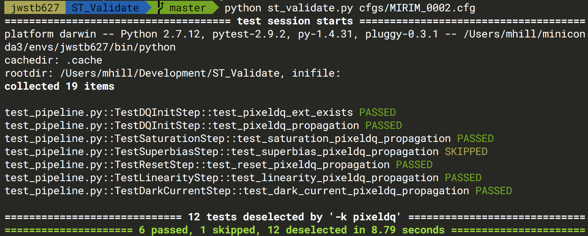

Usage¶
Installation¶
The test suite can be obtained by cloning the repository on GitHub here.
You can then install the tool with
$ python setup.py install
stvalidate can be run from the command line with
$ stvalidate /path/to/my_config.cfg
Configuration Files¶
All of the options for running the test suite are set via a configuration file (my_config.cfg in the above command).
For example, let’s say you have some MIRI data in the directory /mydata/miri which you have run through some of
the steps in the calibration pipeline. In the configuration file you would set the appropriate values to the path
of the input and output files from that step, so in the dq_init section input_file is the input of the dq_init step of the pipeline and output_file is output after running the dq_init step. If you skipped
some steps or don’t want to test the output just remove the section associated with that step and the tests will be skipped
automatically.
You can also specify which tests to run or skip via the tests option. The example below (tests = pixeldq)
would select only tests which contain “pixeldq” in their name. You can use any boolean expression to choose tests. For
example “pixeldq and not linearity” would choose all tests which contain “pixeldq” in their name unless they also contain
“linearity”. The full list of tests and their descriptions can be found in the Tests section.
[dq_init]
input_file = /mydata/miri/jw06161001001_01101_00002_MIRIMAGE_uncal.fits
output_file = /mydata/miri/jw06161001001_01101_00002_MIRIMAGE_dq.fits
[saturation]
input_file = /mydata/miri/jw06161001001_01101_00002_MIRIMAGE_dq.fits
output_file = /mydata/miri/jw06161001001_01101_00002_MIRIMAGE_sat.fits
[refpix]
input_file = /mydata/miri/jw06161001001_01101_00002_MIRIMAGE_sat.fits
output_file = /mydata/miri/jw06161001001_01101_00002_MIRIMAGE_refpix.fits
[reset]
input_file = /mydata/miri/jw06161001001_01101_00002_MIRIMAGE_refpix.fits
output_file = /mydata/miri/jw06161001001_01101_00002_MIRIMAGE_reset.fits
[lastframe]
input_file = /mydata/miri/jw06161001001_01101_00002_MIRIMAGE_reset.fits
output_file = /mydata/miri/jw06161001001_01101_00002_MIRIMAGE_lastframe.fits
[linearity]
input_file = /mydata/miri/jw06161001001_01101_00002_MIRIMAGE_lastframe.fits
output_file = /mydata/miri/jw06161001001_01101_00002_MIRIMAGE_lin.fits
[dark_current]
input_file = /mydata/miri/jw06161001001_01101_00002_MIRIMAGE_lin.fits
output_file = /mydata/miri/jw06161001001_01101_00002_MIRIMAGE_dark_current.fits
[options]
# run tests which contain 'pixeldq_propagation' in their name
tests = pixeldq_propagation
Output¶
Terminal output is generated by py.test. You will see a list of the tests as well as whether they PASSED/FAILED/SKIPPED/ERROR. Example output shown below
